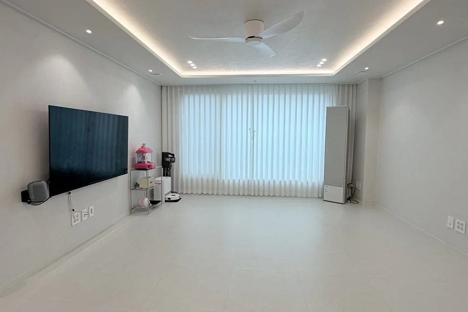
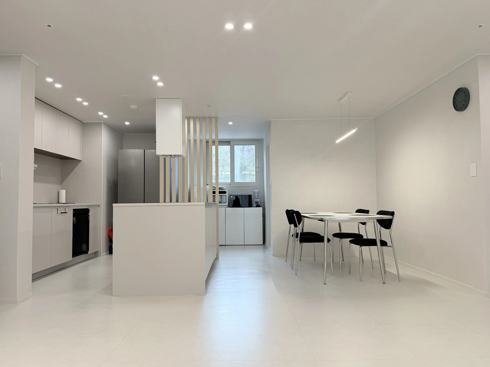
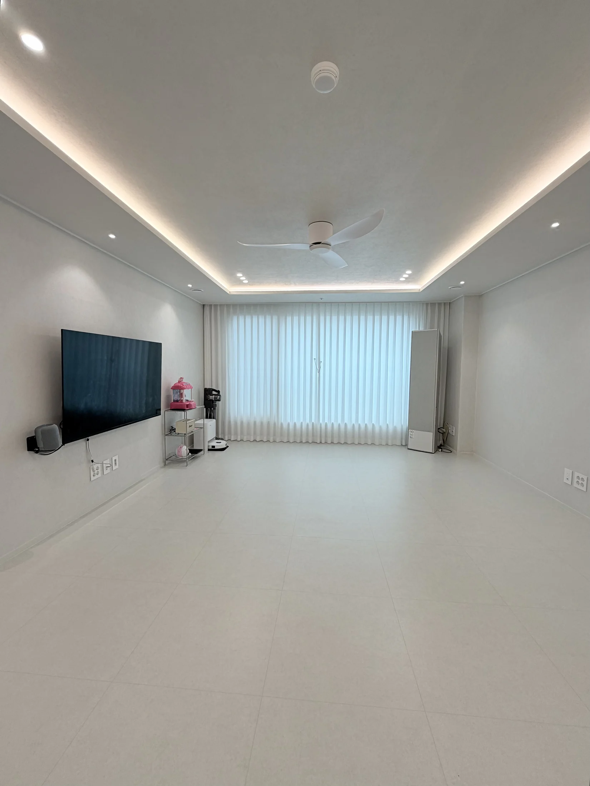
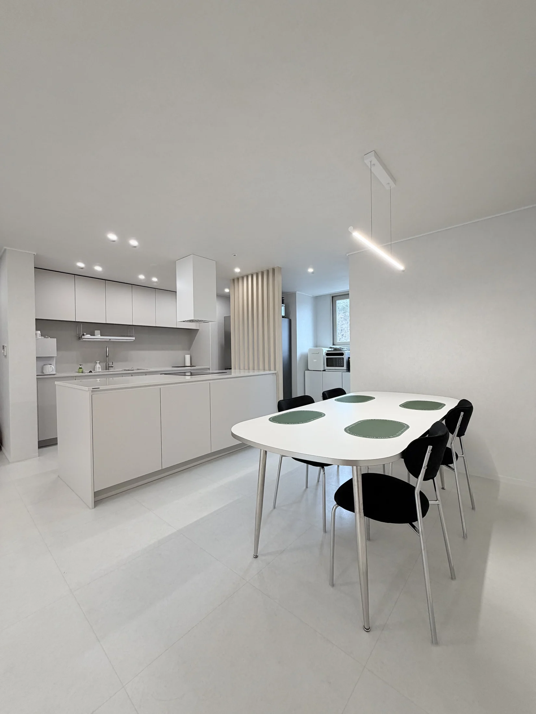
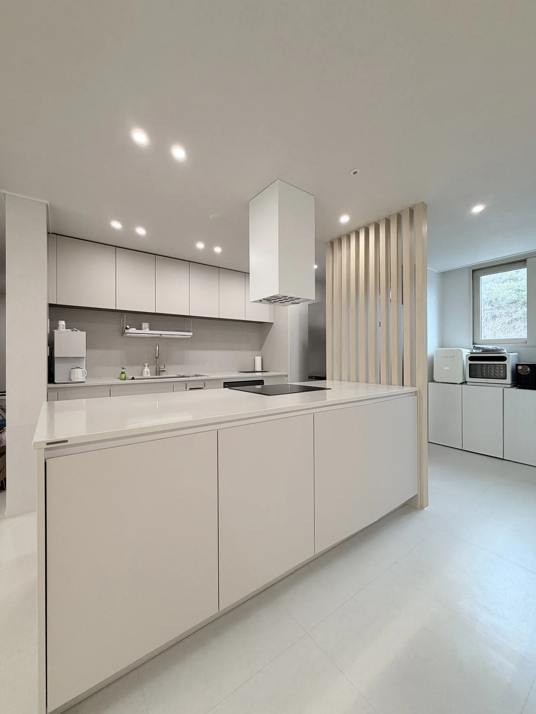

기존 상태
거실과 주방 사이에 무엇을 남기고 정리할지 판단하는 것이 중요한 35평 현장입니다.
설계 판단
각 공간의 기능은 구분하되 시선과 이동이 끊기지 않도록 전체 연결을 먼저 검토했습니다.
주요 시공
거실, 다이닝, 주방을 하나의 흐름으로 정리하고 침실과 욕실의 마감을 함께 맞췄습니다.
완공 결과
주방과 거실이 따로 놀지 않으면서 생활 영역은 분명하게 사용할 수 있는 공간이 됐습니다.

거실과 주방 사이에 무엇을 남기고 정리할지 판단하는 것이 중요한 35평 현장입니다.
각 공간의 기능은 구분하되 시선과 이동이 끊기지 않도록 전체 연결을 먼저 검토했습니다.
거실, 다이닝, 주방을 하나의 흐름으로 정리하고 침실과 욕실의 마감을 함께 맞췄습니다.
주방과 거실이 따로 놀지 않으면서 생활 영역은 분명하게 사용할 수 있는 공간이 됐습니다.



